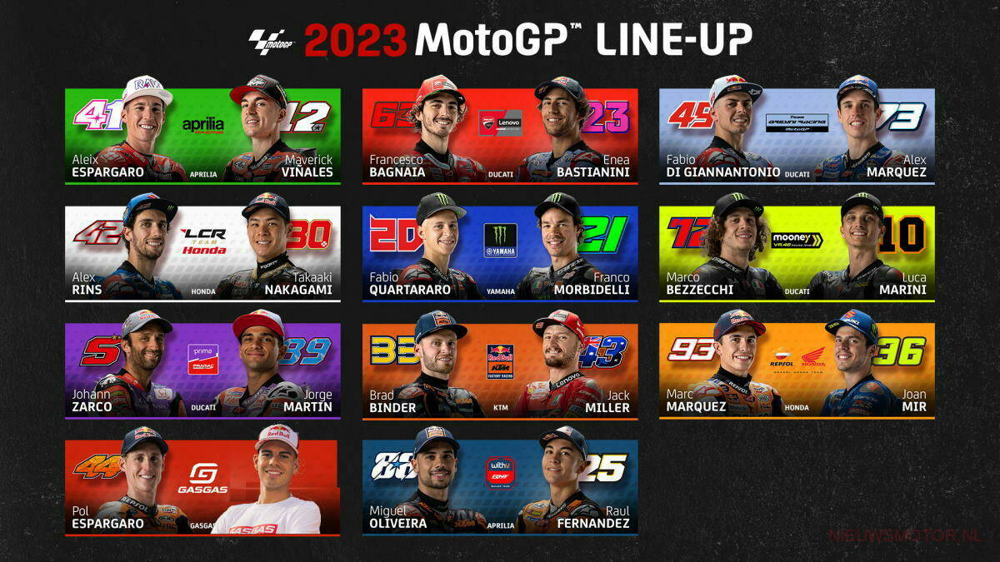

Teams en coureurs bij de MotoGP in 2023
Er wordt gestreden door 11 teams met ieder twee coureurs. Zo scheuren dit jaar voor de kampioenstitel
Repsol Honda (Joan Mir en Marc Márquez), Ducati Team (Enea Bastianini en Francesco Bagnaia),
Monster Energy Yamaha Racing (Franco Morbidelli en Fabio Quartararo), LCR Honda (Alex Rins en
Takaaki Nakagami), Red Bull KTM Factory Racing (Brad Binder en Jack Miller), Aprilia Factory
Racing Team (Aleix Espargaró en Maverick Viñales), Pramac Racing (Johann Zarco en Jorge Martín),
Tech3 GasGas Factory Racing (Augusto Fernández en Pol Espargaró), Mooney VR46 Racing Team
(Luca Marini en Marco Bezzecchi), RNF MotoGP Team (Raúl Fernández en Miguel Oliveira) en
Team Gresini (Álex Márquez en Fabio di Giannantonio).
Zie hieronder een afbeelding van alle coureurs en hun bijbehorende team:
